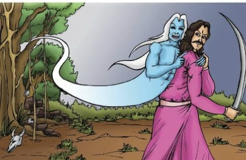
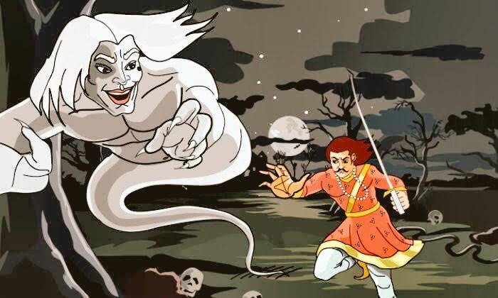

26.સાધુ શાંતશીલની વાર્તા |
સતત ચોવીસ પ્રયાસો પછી, રાજા વિક્રમાદિત્ય આખરે મૃતદેહને સ્મશાનમાં લઈ જવામાં સફળ થાય છે અને બેતાલ શરીરનો ત્યાગ કરે છે. આગળ જાણો શું થયું જ્યારે રાજા વિક્રમાદિત્ય મૃતદેહ લઈને યોગી પાસે પહોંચ્યા.
|
|
રાજા વિક્રમાદિત્ય અને તેમના ખભા પર મૃત શરીર જોઈને યોગી ખૂબ જ ખુશ થયા. તેણે પ્રસન્નતા વ્યક્ત કરી અને રાજાને કહ્યું, "હે રાજા, આ મુશ્કેલ કાર્ય કરીને તમે સાબિત કર્યું છે કે તમે બધા રાજાઓમાં શ્રેષ્ઠ છો." એમ કહીને તેણે રાજાના ખભા પરથી દેહ હટાવ્યો અને તંત્ર સાધનાની તૈયારી શરૂ કરી.
જ્યારે તંત્ર ધ્યાન પૂર્ણ થયું, ત્યારે તેણે રાજાને કહ્યું, "હે રાજા, હવે તમે સૂઈ જાઓ અને તેમની પૂજા કરો." રાજાને આ સાંભળતા જ બેતાલની વાત યાદ આવી. તેણે યોગીને કહ્યું, "મને આ કેવી રીતે કરવું તે ખબર નથી, તેથી કૃપા કરીને પહેલા મારા માટે કરો અને મને કહો, પછી હું કરીશ."
|  |
યોગી પ્રણામ કરવા પ્રણામ થતાં જ રાજાએ તેમનું માથું કાપી નાખ્યું. આ બધું જોઈને બેતાલ ખૂબ જ ખુશ થયો અને બોલ્યો, “રાજા, આ યોગી વિદ્વાનોના રાજા બનવા માંગતા હતા, પણ હવે તમે વિદ્વાનોના રાજા બનશો. મેં તને ખૂબ પરેશાન કર્યા છે, હવે તારે જે જોઈએ તે માંગી લે.”
આ સાંભળીને રાજાએ કહ્યું, "જો તમે ખુશ છો, તો હું ઈચ્છું છું કે તમે મને જે ચોવીસ વાર્તાઓ કહી છે તેની સાથે સાથે આ પચીસમી વાર્તા પણ આખા વિશ્વમાં પ્રખ્યાત થાય અને દરેક તેને આદરપૂર્વક વાંચે. "
આ સાંભળીને બેતાલે કહ્યું, "તારી ઈચ્છા પ્રમાણે થશે, આ કથાઓ 'બેતાલ-પચીસી' તરીકે ઓળખાશે અને જે કોઈ તેને ધ્યાનથી વાંચશે કે સાંભળશે તેના પાપ નાશ પામશે."
|  |
આટલું કહીને બેતાલ ચાલ્યો ગયો અને તેના ગયા પછી ભગવાન શિવ રાજા સમક્ષ હાજર થયા. ભગવાન શિવ પ્રગટ થયા અને રાજાને કહ્યું, “તમે આ દુષ્ટ યોગીને મારીને સારું કામ કર્યું છે. હવે તમે જલ્દી જ સાત ટાપુઓ સહિત અંડરવર્લ્ડ અને પૃથ્વી પર રાજ કરશો. જ્યારે તમે આ બધી બાબતોથી સંતુષ્ટ થાઓ, ત્યારે મારી પાસે આવજો.” એમ કહીને શિવજી ત્યાંથી ચાલ્યા ગયા.
આ પછી રાજા પોતાના શહેરમાં ગયો અને જ્યારે બધાને રાજાની બહાદુરીની ખબર પડી તો બધાએ રાજાના વખાણ કર્યા અને ઉજવણી કરી. થોડા સમય પછી, રાજા વિક્રમાદિત્ય પૃથ્વી અને અંડરવર્લ્ડનો રાજા બન્યો. જ્યારે તેનું હૃદય સંતુષ્ટ થયું, ત્યારે તે ભગવાન શિવ પાસે ગયો.
દુષ્ટ ક્યારેય જીતતું નથી. જો વ્યક્તિ સ્વચ્છ મન અને ધીરજ ધરાવતો હોય તો તેને દરેક જગ્યાએ સન્માન મળે છે